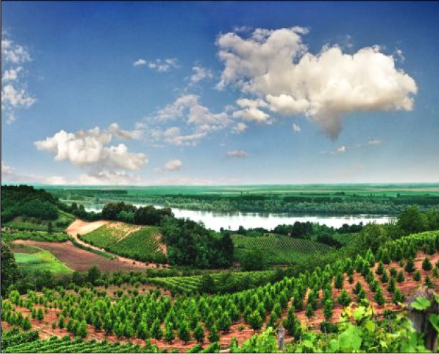
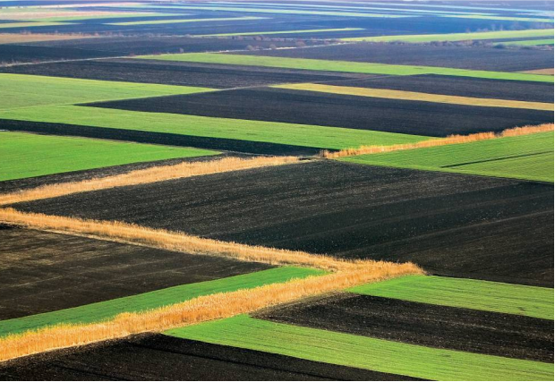

Posetite Frusku goru i saznajte zasto pola Novog Sada svaki vikend pali gore

IstorijatFruška gora je ostrvska planina u Srbiji, u okviru koje se nalazi nacionalni park. Najveći deo Fruške gore se nalazi u severnom delu Srbije, u Sremu, delu autonomne pokrajine Vojvodine, dok mali deo zalazi u istočnu Hrvatsku. Ova planina se prostire dužinom od oko 78 km i širinom od 12 do 15 km i zahvata površinu od 255 km2 Deo Fruške gore je 1960. godine proglašena nacionalnim parkom i time je postala prvi nacionalni park u Srbiji. Najviši vrh je Crveni Cot (539m) |
 |
|  |
PrivredaDanas veliki problem predstavljaju prometni regionalni putevi koji povezuju Srem, Banat i Bačku. Njima saobraća veliki broj vozila, posebno kamiona, koji zagađuju i uništavaju najlepše delove planine. Nekada je na Fruškoj gori bila razvijena i rudarska proizvodnja uglja u Vrdniku, ali je rudnik napušten pre više decenija. Na planini se nalaze više površinskih kopova, što napuštenih, što aktivnih. Na Fruškoj gori izgrađeno je 14 veštačkih jezera uglavnom na južnoj strani planine (sva osim Popovičkog i jezera kod Testere) u potočnim dolinama u cilju navodnjavanja, odbrane od bujica, ali i turizma i ribolova. Informacije o nekim od tih jezera prikazani su u tabeli: |
KulturaNa Fruškoj gori najznačajniji spomenik kulture predstavlja manastiri raspoređenih po celoj planini. Podignuti su kao zadužbine srpskih vladarskih porodica, nakon što je, u kasnom srednjem veku pod pritiskom Turaka, težište srpske duhovne i kulturne baštine pomereno na sever. |

|
Fruškogorski manastiri su:
- Beocin
- Vrdnik
- Grgeteg
- Jazak
- Kuveždin
- Novo Hopovo
- Privina Glava
- Staro Hopovo
- Bešenovo
- Velika Remeta
- Đipša
- Krušedol
- Mala Remeta
- Petkovica
- Rakovac
- Vranjaš
- Šišatovac